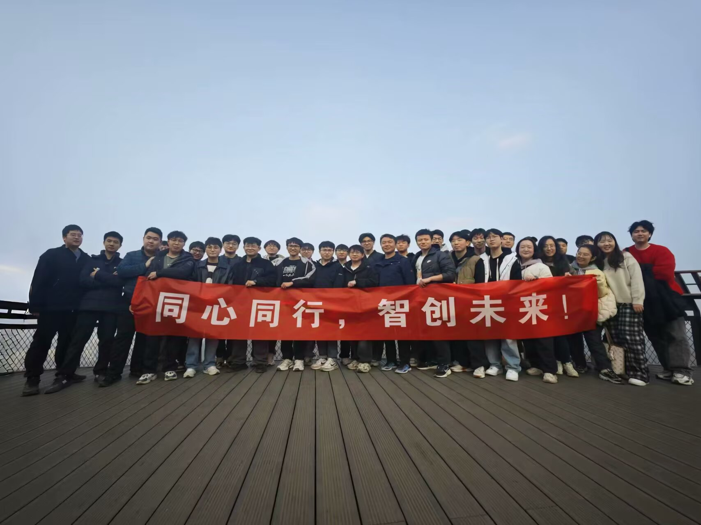

01
Learning-based Distributed Optimization
Learning-based optimization, distributed economic dispatch, and real-time energy management under renewable uncertainty and large-scale network constraints.
We develop distributed optimization and control, learning-based optimization, resilient control, and data-driven intelligence for renewable-rich microgrids and smart energy systems.
Research, collaboration, and innovation in smart energy systems.


Associate Professor (Professor-equivalent) · Ph.D. Supervisor
College of Information Engineering, Zhejiang University of Technology
Dr. Fanghong Guo is an Associate Professor (Professor-equivalent) and Ph.D. supervisor at the College of Information Engineering, Zhejiang University of Technology. His research focuses on distributed control and optimization for microgrids, smart grids, industrial internet, and data-driven energy intelligence. He previously conducted research at the Rolls-Royce@NTU Corporate Lab and A*STAR's Experimental Power Grid Centre in Singapore.
Zhejiang University of Technology
Professor-equivalent Associate Professor, College of Information Engineering
A*STAR, Singapore
Scientist, Experimental Power Grid Centre
Rolls-Royce @ NTU Corporate Lab
Research Fellow
Nanyang Technological University
Ph.D.
Our research spans real-time scheduling, stable control, and cyber-resilient operation for renewable-rich microgrids.
Learning-based optimization, distributed economic dispatch, and real-time energy management under renewable uncertainty and large-scale network constraints.
Distributed secondary control for voltage restoration, frequency regulation, power sharing, finite-time convergence, and event-triggered communication.
Attack detection and resilient control against DoS, false-data-injection, and sensor attacks, together with time-varying sampling and secure communication mechanisms.
Privacy-preserving federated learning, fault diagnosis, intelligent operation and maintenance, and industrial data analytics for distributed power-system data and edge devices.
CRC Press, 2017
Chemical Industry Press, 2024 · Chinese monograph
National Natural Science Foundation of China · Principal Investigator
Zhejiang Provincial Distinguished Young Scholars Program · Principal Investigator
Zhejiang Provincial Key R&D Program · Principal Investigator
State Grid Hangzhou Power Supply Company · Industry Project · Principal Investigator
The current version includes the publicly verified PI profile. Student and alumni profiles can be added in assets/main.js.
We welcome students interested in distributed optimization and control, microgrids, federated learning, power-system AI, and embedded intelligence.
College of Information Engineering
Zhejiang University of Technology
Information Engineering Building A102, Pingfeng Campus